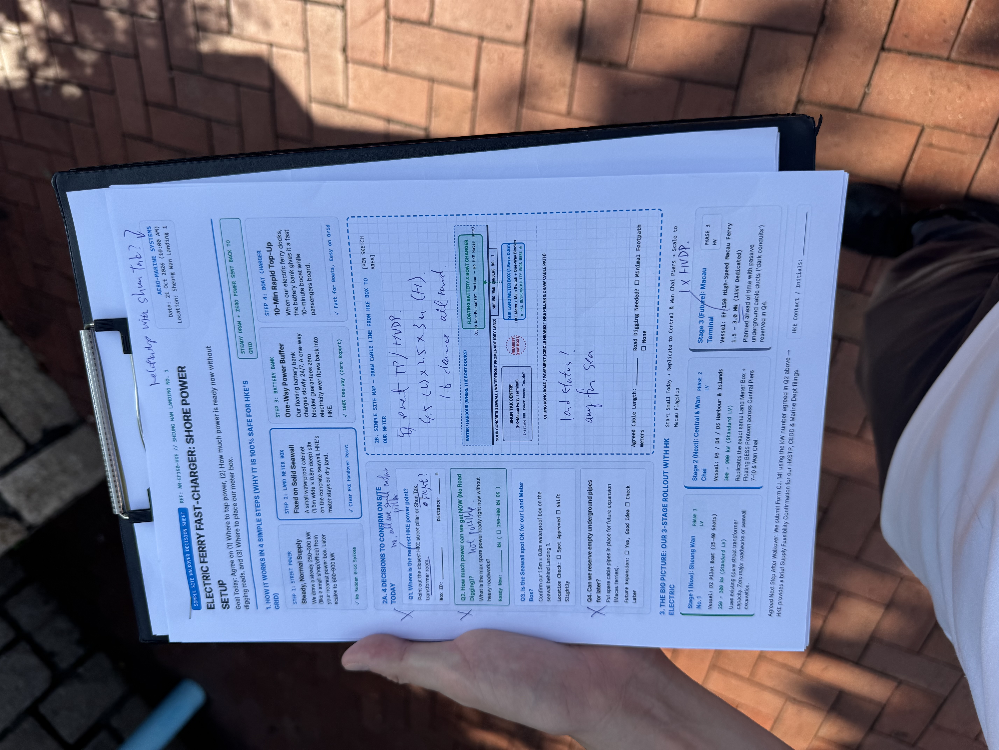
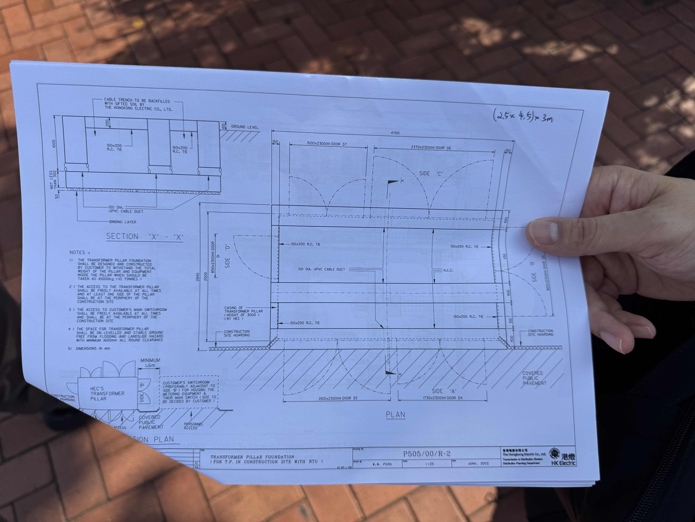
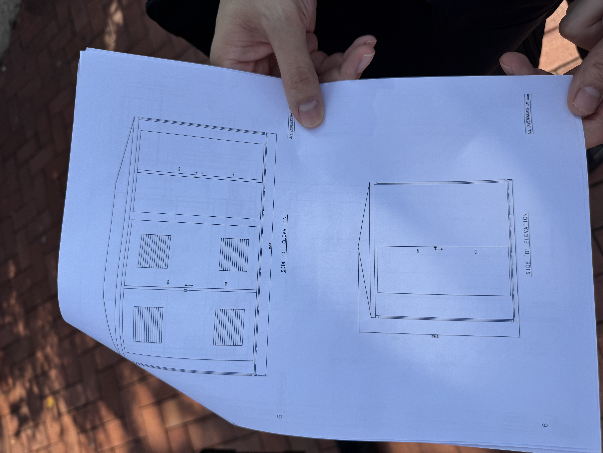

22 kV Open-Standard EV Terminal, Capitalization & Dual-Utility Traction
Complete engineering and institutional data room: featuring our 21–22 October 2026 HK Electric alignment (Permanent Concrete Customer Substation at FFL ≥ +7.0 mPD housing N × 1,500 kVA transformers), our confirmed 28 October 2026 Microsoft Teams meeting with CLP Power Marine eMobility, our HK$ 3,198,000 Phase 0–1 R&D budget (93.5% grant coverage), and HK$ 20,000,000 Phase 2 ITC ESS 1:1 co-matching structure.
HK Electric Sheung Wan Walkover Outcome & CLP Cross-Harbour Synchronization
Following our on-site walkover at Sheung Wan Landing No. 1 (21 Oct 2026) and engineering call with Mr. Ting of HK Electric Distribution Planning (22 Oct 2026), HKE confirmed that our permanent EV ferry terminal will incorporate a Concrete Customer Substation at FFL ≥ +7.0 mPD housing N × 1,500 kVA transformers fed by 22 kV HV from the adjacent Sheung Wan 132/22 kV Zone Substation. On 26 Oct 2026, CLP Power’s Marine eMobility division scheduled our Microsoft Teams alignment call for 28 Oct 2026 (10:00 AM) to synchronize Kowloon and New Territories landing nodes.
1 set TP/HVDP enclosure: 4.7m (L) × 2.5m (W) × 3.0m (H) per Drawing P505/00/R2 with 1.6m operational clearance all round.
Upgraded to a 2-story Flood-Protected Concrete Customer Substation (FFL ≥ +7.0 mPD) housing 1 → 3 → 6 × 1,500 kVA transformers (22 kV HV).
GIS Pin: 22.290175° N, 114.148746° E (Sai Fire Services St). Pursued via Cap. 127 Foreshore/Seabed marine deck & LandsD STT/PTG.

FIELD RECORD 01 // ANNOTATED SHEET Click to Enlarge ↗On-Site Walkover Notes (Sheung Wan No. 1)
Records HKE engineer notes: "1 set TP/HVDP", "4.7 (L) × 2.5 × 3m (H)", "1.6m clearance all round", and "Land status! Ask for sea" confirming greenfield land allocation as the primary trigger.

HKE DRAWING // P505/00/R2 (PLAN) Click to Enlarge ↗HKE Baseline Pillar & Cable Trench Plan
Baseline single-unit specification (P505/00/R2); upgraded per Mr. Ting (22 Oct) to a permanent Concrete Customer Substation at FFL ≥ +7.0 mPD housing N × 1,500 kVA transformers.

HKE DRAWING // SIDE C & D ELEVATION Click to Enlarge ↗HKE Enclosure Elevation Profile (3.0m Height)
Side 'C' (4500mm width) and Side 'D' (3000mm height) elevation blueprints provided on-site by HK Electric at Sheung Wan Landing No. 1.
Sheung Wan 2-Story EV Terminal Specification (FFL ≥ +7.0 mPD Concrete Substation)
Incorporating HK Electric Distribution Planning’s 22 October 2026 engineering requirements (Mr. Ting) and synchronized with CLP Power Marine eMobility (28 Oct Teams session), our Sheung Wan Greenfield Terminal is engineered as an open-standard marine charging hub ("the Supercharger of Victoria Harbour" using CharIN MCS / IEC 61851-23-3 & ISO 15118-20). Located 150m from Sheung Wan MTR Exit D and the Macau Ferry Bus Terminus, it combines a Ground-Floor AC Passenger Lounge (+3.8 mPD) with a Flood-Protected Upper-Deck Concrete Customer Substation (FFL ≥ +7.0 mPD) housing modular 1,500 kVA transformers.
Universal Berth Compatibility (D2 → D5 → EF-150 & Third-Party Ferries)
400 kWh LFP Battery • Powered by Stage 1 HKE 1×1,500 kVA Transformer + 1.5 MWh BESS Buffer
600 kWh – 1.4 MWh LFP Battery • Synchronized across Sheung Wan HKE Hub & CLP Kowloon/NT Hubs + 90s Cargo Swap
1.8 MWh 1,000V LFP Battery • Powered by 3×1,500 kVA (4.5 MVA) HKE Bank • Open-access ISO 15118-20 billing for all operators
Territorial "Hub-and-Spoke" Energy Architecture (Zero Rural Grid CapEx)
Concentrates high-voltage infrastructure at primary urban terminals adjacent to existing zone substations: HK Electric’s Sheung Wan 132/22 kV Zone Substation (confirmed 21–22 Oct) and CLP Power’s Kowloon/NT waterfront nodes (Teams alignment scheduled 28 Oct).
Uses existing 400V low-voltage pier connections for slow 6–8 hour overnight cell-balancing while vessels are out of service—requiring zero submarine cable or island high-voltage substation upgrades.
Vessels depart Tier 1 Urban Hubs at 85–90% State-of-Charge, perform 60-second passenger boarding stops at rural piers with zero shore-power draw, and recharge upon returning to the urban hub.
93.5% Non-Dilutive Leverage & Staged VC Architecture
Presented below in clean, single-ledger views: our HK$ 3,198,000 Phase 0–1 R&D budget (93.5% covered by non-dilutive HKSTP and ITF grants), our HK$ 2,990,000 public grant stack, and our staged private VC tranches (including 1:1 ITC ESS matching for Phase 2).
Compliance-Audited R&D Budget Breakdown
01. R&D Engineering Talent (ITF RTH Subsidized)
2x Full-Time Control Systems & Marine Mechatronics Engineers (100% covered via ITF RTH)
02. Simulation Software & Multi-Physics Cloud
MATLAB/Simulink Control Toolboxes, Star-CCM+ / ANSYS CFD licenses, Gazebo/ROS2 compute
03. HIL Benchtop & D1 Avionics/Sub-Scale Rig
NVIDIA Jetson Orin Nano, dual STM32H7 ECUs, SBG IMU, LiDAR sensors & carbon T-foil rig
04. Systems Architecture, Project Management & Operational Runway
Principal Systems Architect leadership, HKE/CLP/HKMD regulatory interfacing & 18-mo runway
05. Intellectual Property & Freedom-to-Operate
PCT & regional patent filings for 100Hz active foil stabilization & BESS telemetry (90% PAG)
06. HKSTP Lab Setup, Marine Insurance & Tolo Trials
Science Park bench space, third-party marine test insurance, and Tolo Harbour slipway logistics
Net Unsubsidized Equity Gap: Only HK$ 208,000 (6.5%)
Public grants reimburse HK$ 2,990,000 of the HK$ 3,198,000 budget. Angel capital serves primarily as a low-risk working-capital reimbursement float.
Leveraged Public Capital Stack (Phase 0–1: HK$ 2,990,000)
Direct grant & subsidy covering Science Park lab rent, HIL hardware tooling, and R&D milestone gates.
100% salary reimbursement for 2 full-time control systems & marine mechatronics engineers over 18 months.
Covers 90% of up to HK$ 278,000 in PCT and regional patent filings across our 3 core patent families.
Staged Private VC & Green Infrastructure Tranches (HKD)
Covers the HK$ 208,000 net equity gap plus working-capital float ahead of HKSTP and ITF RTH reimbursement cycles to execute Phase 0 SIL and Phase 1 D1 Tolo Harbour sea trials.
1:1 matching via HK Innovation & Technology Commission (ESS) to construct the 15m BAYWING-D2 pilot vessel and commission the Stage 1 Sheung Wan 22 kV & CLP cross-harbour charging nodes.
Scales D3–D5 & EF-150 commercial fleets and 22 kV automated MCS charging terminals across all 23 HK routes and 5 GBA corridors in partnership with HK Electric and CLP Power.
Institutional Investment Merits & Engineering Risk Mitigations
STRUCTURAL MOAT, DUAL-UTILITY ALIGNMENT (HKE + CLP) & CAPITAL EFFICIENCY
1. 93.5% Non-Dilutive R&D Leverage & 1:1 ESS Co-Matching
HK$ 2.99M of our HK$ 3.20M Phase 0–1 budget is covered by HKSTP Incu-Tech, ITF RTH, and PAG grants, followed by HK$ 10M 1:1 ITC ESS matching in Phase 2.
2. Dual-Utility 22 kV Grid Alignment (HK Electric + CLP Power Marine eMobility)
Confirmed with HK Electric (21–22 Oct 2026: FFL ≥ +7.0 mPD Concrete Substation & N×1,500 kVA transformers at Sheung Wan) and actively synchronizing Kowloon/NT hubs with CLP Marine eMobility (Teams meeting confirmed for 28 Oct 2026).
3. 78% OPEX Reduction (HK$ 38.22/NM) + Hub-and-Spoke Zero Rural CapEx
Active hydrofoils cut energy burn from HK$ 175.50/NM (diesel) down to HK$ 38.22/NM while unpowered rural piers (Chi Ma Wan, Peng Chau, Tai O) operate as 60-second touch-and-go stops with zero rural grid upgrades.
HKSTP Incu-Tech, ITC ESS 1:1 Match, Green Tech Fund & University RTH
18-Month Science Park Incubation & Tolo Harbour Trials
Combines HK$ 1,290,000 HKSTP Incu-Tech grant with HK$ 250,000 Patent Application Grant (90% PCT coverage). Structured across 3 milestone gates: Months 1–6 (6-DOF SIL Digital Twin), Months 6–12 (HIL Bench & D1 Assembly), and Months 12–18 (Tolo Harbour autonomous sea trials at 13.4 knots).
HK$ 20.0M Co-Matching for BAYWING-D2 Commercial Pilot
Consultation filed Oct 16, 2026 with the ITC ESS Secretariat to match HK$ 10.0M private seed capital with HK$ 10.0M ESS grant funds—financing D2 human-rated 100Hz flight computer certification and our Sheung Wan fast-charging interface.
Zero-Emission Marine Transport & 22 kV Charging Hub
Confirmed on the official EEB Green Tech Fund notification list (Oct 16, 2026) for the Q4 2026 application round and applicant webinar under Category (c) Local Companies, targeting 168,000 tonnes/year CO₂ reduction at full fleet scale.
HKUST Robotics Institute & PolyU Mechatronics Hiring
100% salary coverage (HK$ 725,000 each over 18 months) for two full-time graduates: (1) Flight Control Systems & RTOS Software Engineer and (2) Marine Mechatronics & Hydrofoil Actuation Engineer.
Dual-Utility Grid Integration (HKE, CLP, AAHK, LandsD, EEB, EMSD) & DNV HSC Rules
Kowloon, Tuen Mun & Lantau 22 kV Sync (Teams Call 28 Oct)
Following HK Electric’s 22 kV alignment on HK Island, CLP Power’s Marine eMobility division scheduled a Microsoft Teams session for 28 Oct 2026 (10:00 AM) to align high-voltage / BESS nodes at TST, Hung Hom, Tuen Mun, and Tsuen Wan.
SkyPier 3.8 MW MCS Routing
AAHK confirmed direct management of SkyPier berths; our 3.8 MW MCS shore-power brief is routed to AAHK’s Engineering & Technology Division.
Sheung Wan STT & Policy Support
Confirmed by CEDD (22 Oct 2026): LandsD (DLO/HKW&S) leads the Short Term Tenancy (STT) land allocation while EEB leads green transport policy support for our +7.0 mPD terminal.
800V–1,000V DC & 22 kV Switchgear Safety
Formal acknowledgment received from EMSD for our marine battery architecture, onshore switchgear demarcation, and zero-export grid protection.
DNV High-Speed Craft (HSC) Advisory
Backed by a dedicated HK$ 1,500,000 D2 certification budget covering cell-level LFP thermal isolation, dual pod drives, and 100Hz RTOS fail-safe rules.
Sovereign Green Maritime Hub
Briefed HKMPB Secretariat on cutting ferry energy OPEX by 78% (from HK$ 175.50/NM to HK$ 38.22/NM) while pairing HK flight-control IP with GBA manufacturing.
CLP Kowloon/NT 5-Node Grid Synchronization & Macao 400V-to-BESS Step-Up Matrix
Select any CLP Kowloon/New Territories landing node or Macao Ferry Terminal below to inspect its staged feeder requirement, onshore LFP BESS buffer sizing, and cross-harbour load-sharing ratio with our HK Electric Sheung Wan 22 kV Hub.
Tsim Sha Tsui & Hung Hom Ferry Piers (BAYWING-D3 Shuttle)
Twin-Hub Greenfield EV & GBA Passport Control (CIQ) Terminal Architecture
Following our 21–22 Oct alignment with HK Electric, 27 Oct confirmation from Macao DSMM, and 28 Oct engineering session with CLP Marine eMobility (which confirmed that legacy TST Pier cannot be retrofitted due to heritage preservation restrictions), BAYWING has unified its shore-side master plan around dedicated Greenfield EV & Customs Terminals pursued via top-down HKSTP and GBA industrial channels.
Kowloon 11 kV + BESS Greenfield Terminal with Automated GBA Passport Control (CIQ)
Sheung Wan 22 kV "Water-Airport" CIQ Terminal, 1.5 MWh BESS & 3.5 MW Mega-Charger
Rather than duplicating costly passport control on the congested Kowloon waterfront, BAYWING concentrates 100% of its cross-border Customs, Immigration, and Quarantine (CIQ) and 22 kV megawatt charging at a single sovereign-grade "Water-Airport" Flagship Hub built over the foreshore/seabed (Cap. 127) at Sheung Wan Landing No. 1 (`22.290175° N, 114.148746° E`)—directly fronting HK Electric's Sheung Wan 132/22 kV Zone Substation and immediately adjacent to the Fire Services Department Hong Kong Island Headquarters.
Sheung Wan Landing No. 1 (22.290175° N, 114.148746° E) — Next to Zone Substation & Fire Station
Official Government, Utility & Classification Correspondence Tracker (12 Filings)
Filter all 12 active institutional threads below and click any expandable drawer to inspect the correspondence log (individual email addresses omitted for privacy).